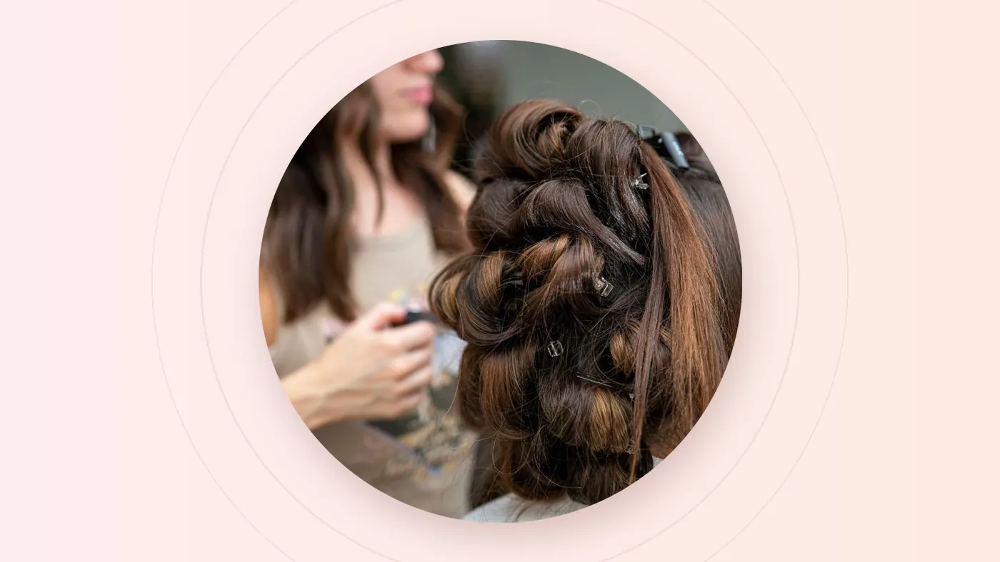

The short answer
Before any scissors or colour come out, we ask what you want to change and what you want to keep, how you live with your hair day to day, and what has been done to it before. Then we check your hair and scalp by hand, explain your options with honest trade-offs, time and price, and agree on a plan together. Consultations are complimentary, and you're never obliged to book the bigger service.
The three most dangerous words in any salon are "just a trim". To one person that means a centimetre. To another, it means taking off whatever looks tired. The gap between those two meanings is where most salon disappointments are born.
At On Hair Salon & Beauty, we close that gap before we start. We call it our listening-first approach, and it's the part of your appointment that quietly decides whether you walk out delighted or merely okay.
Why We Talk Before We Touch Your Hair
Visiting a salon can feel intimidating. You might worry about being misunderstood, talked into a treatment you didn't ask for, or surprised by the bill. A proper consultation removes those worries one by one.
It also protects your hair. Previous colour, rebonding, perms and treatments all change how hair reacts to new chemical services. The only way to know what your hair can safely handle is to ask, look and feel before deciding.
The Six Steps of a Listening-First Consultation
- Your goal, and what you want to keep. We ask what you'd like to change, and just as importantly, what you love about your hair right now. Keeping your length, your fringe or your natural wave is as important as changing the colour.
- Your real routine. How many minutes do you spend styling in the morning? Do you tie your hair up for work, swim or head to the gym? A style that needs a blow-dry every day won't suit someone who air-dries on the way out.
- Your hair history. We go through recent colour, bleaching, box dye, rebonding, perms and treatments. Think of it as your hair's roadmap.
- The hands-on check. We look at and feel your hair's texture, thickness, elasticity and ends, and take a look at your scalp.
- Options and trade-offs. There's often more than one way to get a look. We explain each option's result, how long it takes, the upkeep it needs, and the price.
- The plan. We agree on what happens today, what might happen in a later session, and how to look after the result at home.
What We Check, and Why It Matters
| What we look at | Why it matters |
|---|---|
| Texture and thickness | Fine hair and coarse hair react differently to cutting, colour and heat, and need different amounts of product. |
| Elasticity | Hair that stretches and doesn't spring back may not be ready for another chemical service. |
| Previous colour and box dye | Old pigment affects how evenly new colour lifts or deposits. |
| Rebonding, perms and keratin | Overlapping chemical services on the same lengths is a common cause of breakage. |
| Scalp condition | An irritated or sensitive scalp may need a gentler approach or a different day. |
| Your lifestyle | The best result is one you can actually maintain between visits. |
Our safety rule: we will never perform a chemical service if we believe it will cause significant damage. Your hair's long-term health always comes before a temporary change.
What "No Pressure" Looks Like in Practice
Lots of salons promise honesty. Here is what it means in our chairs:
- We'll tell you when you don't need something. If a trim will do, we won't push a package.
- We'll suggest the practical route. If your budget is tight, we'll show you what gives the most impact for it.
- You'll hear the price before we start. For services that depend on length or condition, the final price is confirmed first.
- You can say no. A consultation carries no obligation to book the bigger service, today or ever.
Our goal is for you to leave the chair feeling confident, not only because of how you look, but because you were heard and respected.
How to Prepare for Your Consultation
A few minutes of preparation gets you far more out of the conversation:
- Bring two or three reference photos, plus one of a look you don't want.
- Photograph your hair in daylight if you're consulting over WhatsApp first.
- Be honest about DIY colour, box dyes and anything done at another salon.
- Know your maintenance limit: how often you can realistically come back.
- Have a budget range in mind, so we can plan around it rather than guess.
- Mention sensitivities, whether it's a scalp reaction, skin allergy or a product that irritates you.
Questions Worth Asking Your Stylist
- Can we achieve this today, or will it take more than one session?
- How will it look in four to six weeks?
- What will I need to do at home to keep it looking good?
- Is there a lower-maintenance version of this look?
- What's the final price, and what's included?
Consultations for Beauty Services, Too
The same approach applies beyond hair. For eyebrow embroidery and eyeliner, we map the shape with you and discuss colour and your skin type before anything permanent happens. For facials, we ask about sensitivities and the products you use, and we'll talk timing if you have an event coming up.
Frequently Asked Questions
Is the consultation free?
Yes, consultations are complimentary. They're simply the first part of planning your service properly.
Do I have to book a service after the consultation?
No. You're welcome to go away, think about it and come back when you're ready, or not at all. We would rather you book the right service than the biggest one.
Can I start the consultation over WhatsApp?
Yes. Send your nearest outlet a photo of your hair in natural light, your reference pictures and your hair history. We can share an initial view, then confirm it in person, because some things, like elasticity, can only be checked by hand.
How long does a consultation take?
Usually it's a short conversation at the start of your appointment. More complex requests, like colour correction or a big change, may need a little longer so we can plan properly.
Ready When You Are
A consultation is the simplest way to avoid rushed decisions and walk out with a look that suits your hair, your routine and your budget. Bring your photos and your questions. We'll bring the listening.